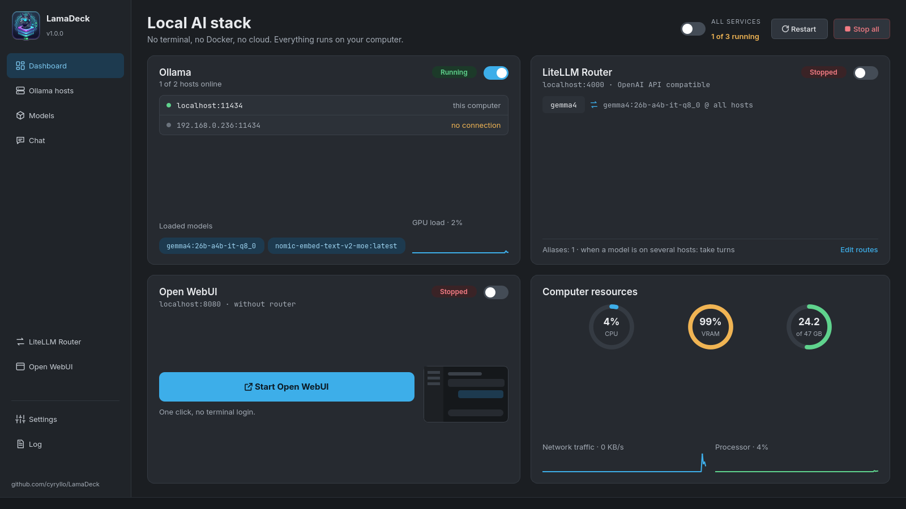
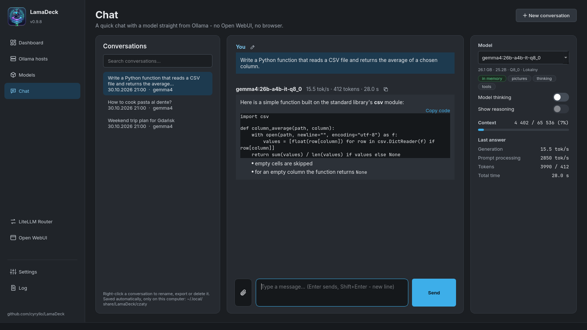
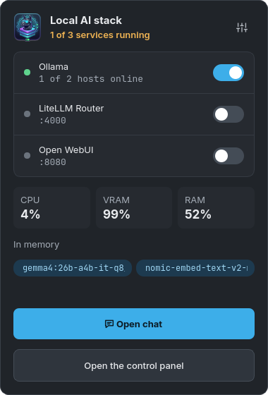

Ollama on several hosts
This computer and any machine on your LAN: online or offline, version, response time, VRAM and RAM used, and which models sit on disk or in memory. Add a host by typing its address.
LamaDeck is a desktop app for KDE that runs Ollama on every computer in your home network, joins all their models behind one address for VS Code and other tools, and has its own chat that can search the web and cite its sources. No terminal, no Docker, no cloud.

It started as a small switch for the Ollama service and grew into one place for the whole stack. Every button calls the same tools you would type in a terminal, and actions that need admin rights ask for your password in the usual KDE dialog.
This computer and any machine on your LAN: online or offline, version, response time, VRAM and RAM used, and which models sit on disk or in memory. Add a host by typing its address.
The LiteLLM router puts every host behind http://localhost:4000/v1
(OpenAI-compatible). Fixed aliases such as code or chat, and a
ready config.yaml for Continue.dev.
One search for the Ollama library and Hugging Face GGUF files, with the real file size of every variant and a memory estimate. An "only MoE" filter for APUs and laptops.
Talk to any model on any host, with tokens per second under every answer. Web search with sources, pictures, PDF and Office documents, links to web pages, and conversations saved on your disk.
Installed and run without Docker or admin rights. Start, stop, open it in the browser, change the port and back up all chats to a ZIP file.
Ollama, LiteLLM, Open WebUI and the app in one list. Errors get a plain explanation of what went wrong, and a link to the host they mention.


Made for KDE Plasma (other desktops work too): a repository for Debian and Ubuntu, an AppImage for every other distribution. Ollama itself can be installed from inside the app.
Add the repository once. After that LamaDeck updates together with the rest of your system.
sudo curl -fsSLo /usr/share/keyrings/lamadeck-archive-keyring.gpg \
https://cyryllo.github.io/LamaDeck/apt/lamadeck-archive-keyring.gpg
sudo curl -fsSLo /etc/apt/sources.list.d/lamadeck.sources \
https://cyryllo.github.io/LamaDeck/apt/lamadeck.sources
sudo apt update
sudo apt install lamadeckDownload lamadeck_…_all.deb from the
releases page and install it.
The package adds the APT repository for you, so updates arrive the same way.
sudo apt install ./lamadeck_*_all.debOne file with everything inside, for Fedora, Arch, openSUSE and others. Download
LamaDeck-…-x86_64.AppImage from the
releases page and run it.
On the first start it offers to add itself to the applications menu.
chmod +x LamaDeck-*-x86_64.AppImage
./LamaDeck-*-x86_64.AppImageCopies the app into your home folder and adds it to the menu. Run the same script again to update.
git clone https://github.com/cyryllo/LamaDeck.git
cd LamaDeck
./install.shThe AppImage needs glibc 2.34 or newer (Ubuntu 22.04, Debian 12, Fedora 35 and later). LamaDeck was called "Ollama Manager" up to version 0.9; installing it replaces the old package and keeps your settings and conversations.
The app covers what it set out to do. Anything bigger, such as user accounts, knowledge bases or voice, is what Open WebUI is for, and it is built in.